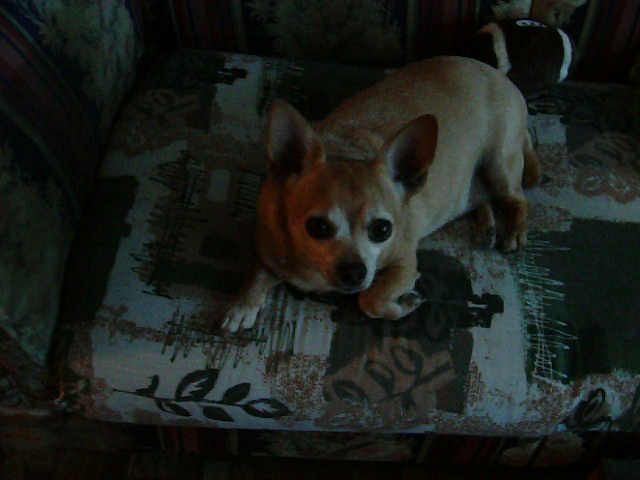

In Loving Memory of Wally
A dear family member who left too soon
Wally "Doot Doot" Neely
May 12, 2002 - June 22, 2015
Dogs can teach us a great deal about kindness. Wally was one of the best teachers. For thirteen years, the chihuahua gave his family lessons in joy, love, and bravery. If you ever needed a hug or a kiss, he was always there, ready to give them. He lived a long life for a dog, and was given as much love as he gave, but he wasn't given as much time in this world as he deserved. Forever wouldn't have been enough time.

He was also a singer. The US National Anthem and Elvis's "Blue Christmas" were his particular favorites, but if you just told him to sing, he'd make up a song of his own. He loved the outdoors, and had a favorite corner in the back of the yard that he always visited. And every morning, he'd demand more attention by pawing at the living room rug until it was in disarray, while making huffy little noises and wagging his tail like he was having the time of his life.
Wally was preceeded in death by his cranky but endearing older brother, Poncho, in 2007. He is survived by his two eight-year-old siblings, Pandora and Peanut.
Things Wally Loved
- His family
- Toys
- The outdoors
- His sweater
- Mealtime
- Stealing body heat
- Love